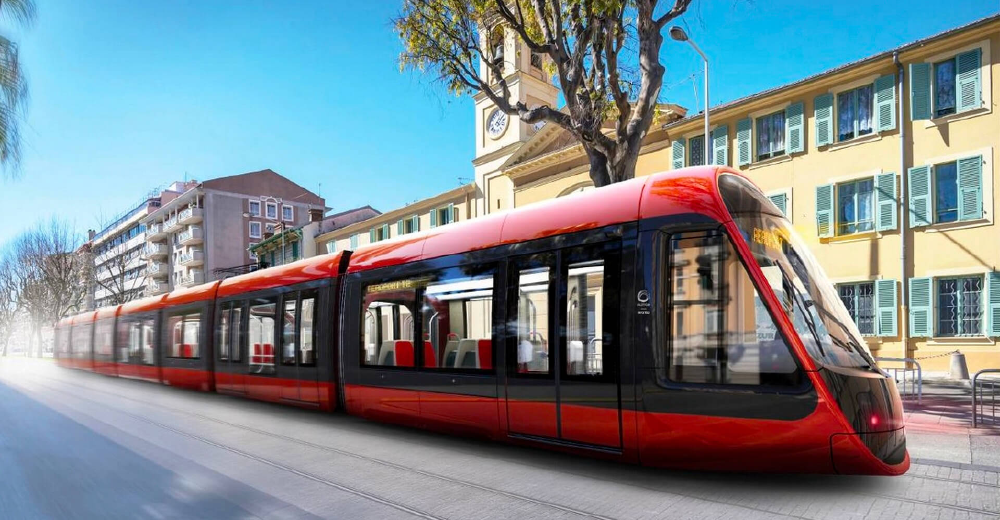
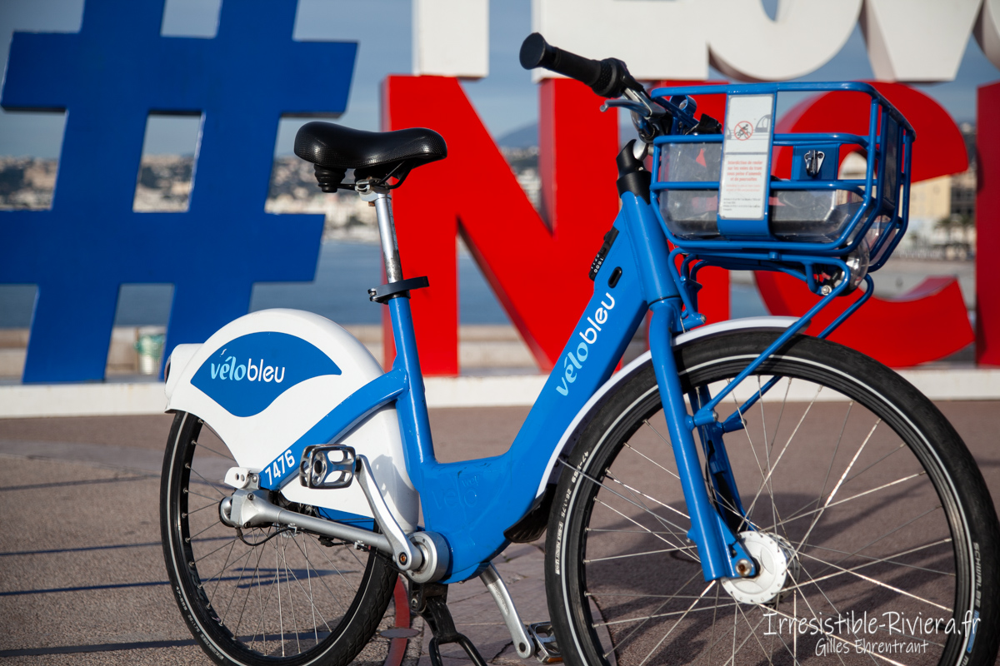
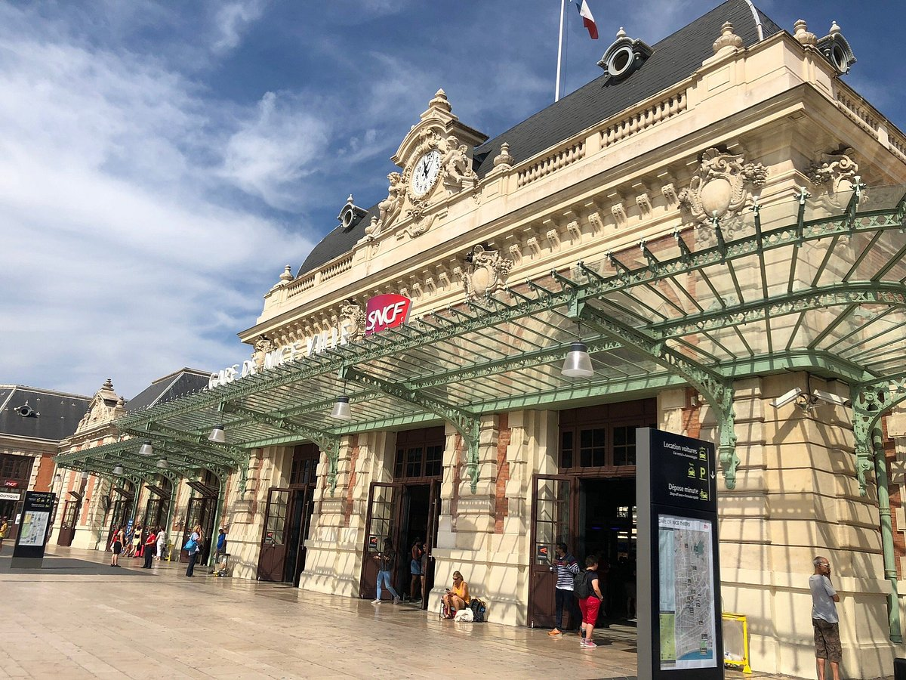

Tramway
Station la plus proche : Fabron. 10 min à pied depuis l’appartement via l’avenue de Fabron. Réseau pratique pour rejoindre le centre-ville et l’aéroport.
Site Lignes d’Azur Google Maps
Vélo en libre service
Vélos et trottinettes électriques disponibles via les applications Lime et Pony.
LimePony
Gare SNCF Nice-Ville
Trains régionaux et nationaux depuis la gare principale située au cœur de Nice.
Site SNCF Google Maps